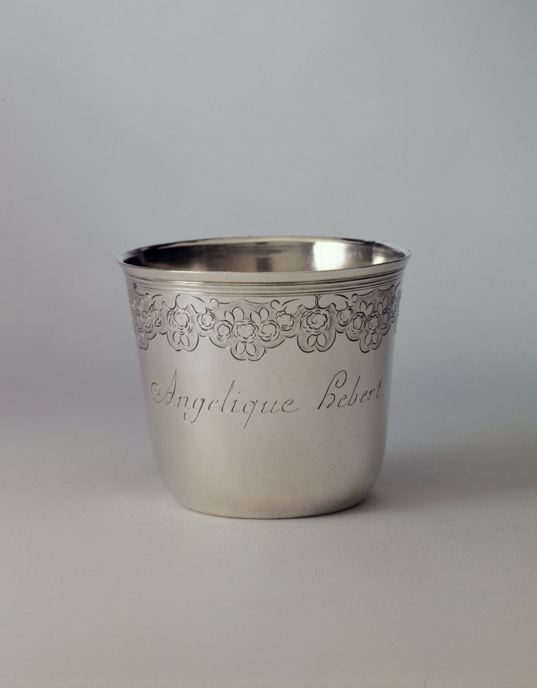

A name
in front
Angélique Hebert is engraved on the cup. The catalogue locates the discharge beneath the collar and the other punches beneath the base.

The catalogue's map
Marks behind the edge
Under the collar
Discharge: a tête de braque, Paris, 1762–1768.
Silver standard: Minerva, Paris and departments, since 1838.
Under the base
Maker: HNDB with a mitre. Common mark: crowned B, 1765–1766. Charge: crowned A, 1762–1768.
Engraved numbers: 101 and 1.
Locations from the record. The photograph does not show these marks; no punch shape is drawn here.
What the photograph gives
The cup's body carries “Angélique Hebert” in script. That is the only inscription legible in this view. The image shows neither the discharge nor the marks under the base.
What the record adds
The Petit Palais dates Henri-Nicolas Debrie's gobelet to Paris, 1765–1766, and places each mark at a named location. The record does not state who Angélique Hebert was to the cup; I leave that relation open.
Henri-Nicolas Debrie, Gobelet, 1765–1766, silver, H. 6.1 cm; diam. 7.2 cm. Petit Palais, musée des Beaux-arts de la Ville de Paris, PPO2239. Collection record and image under CC0; image: Paris Musées / Petit Palais, musée des Beaux-Arts de la Ville de Paris. Object record · IIIF manifest.